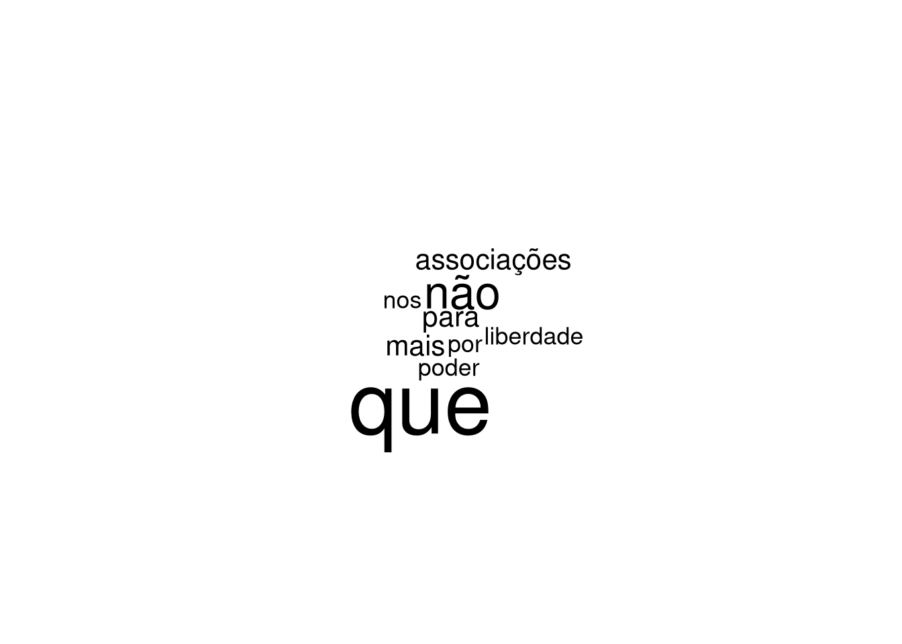
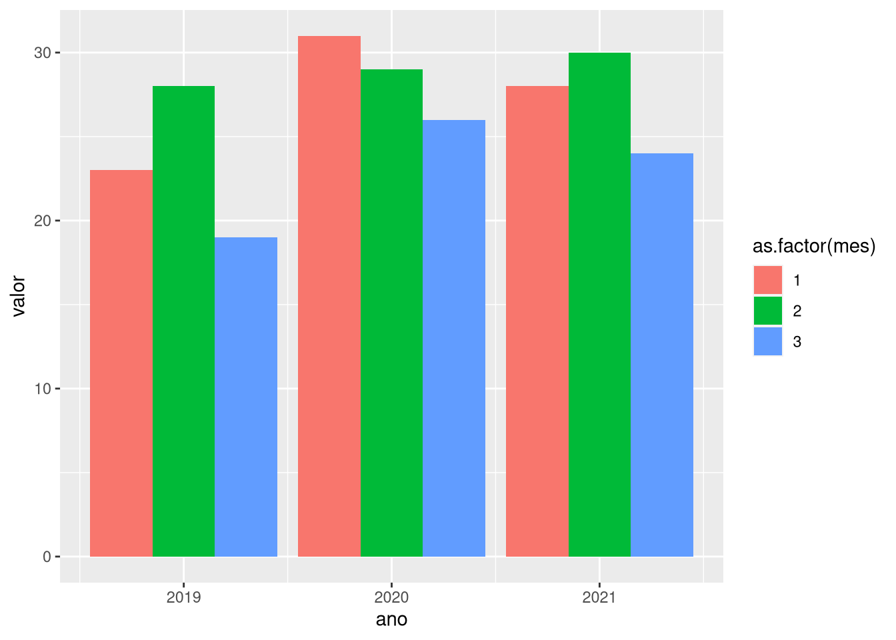
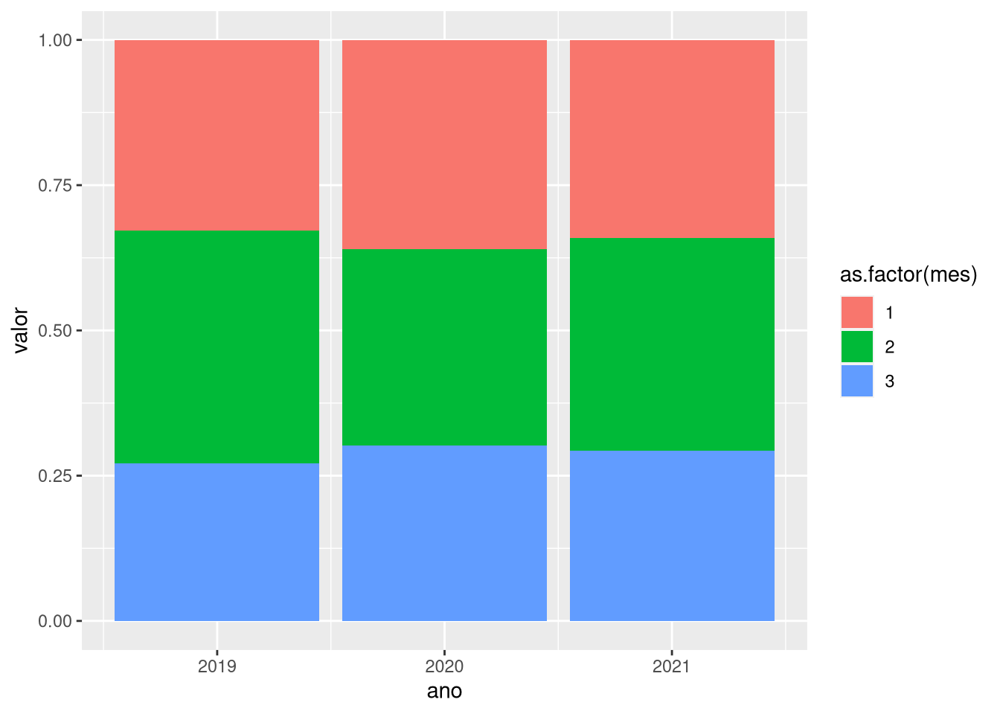
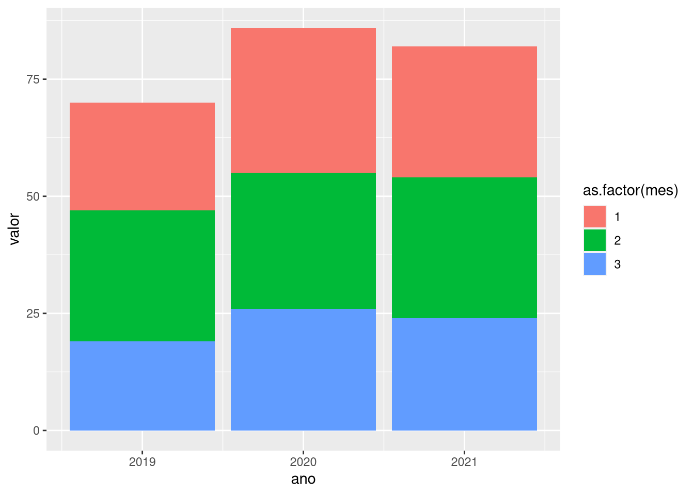
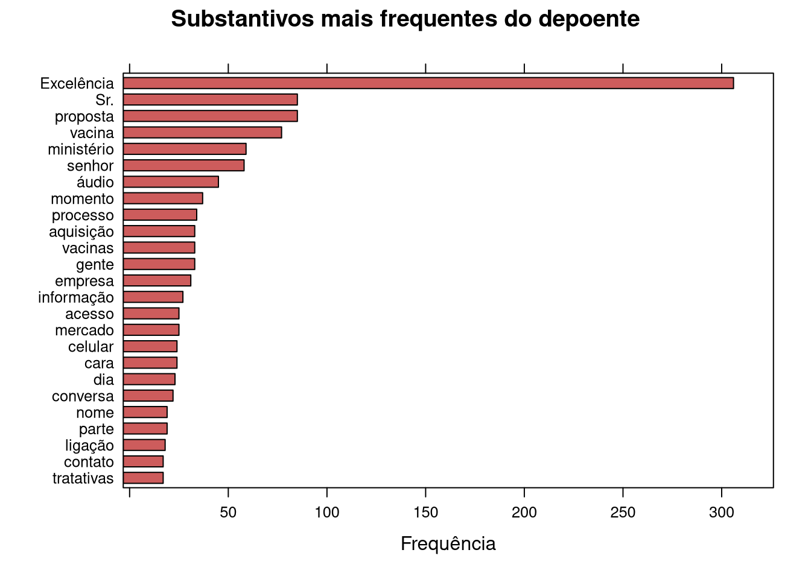
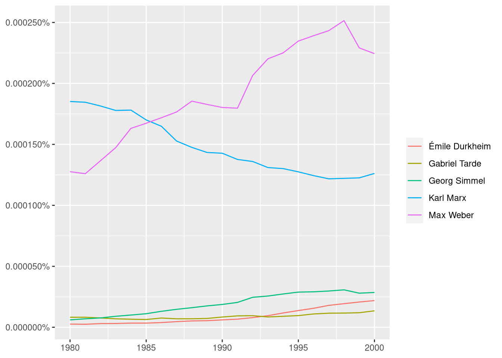

Capítulo 7 Visualização de dados
Objetivos deste capítulo:
- Apresentar uma introdução à visualização de dados com
- pacote base
- pacote lattice
- pacote ggplot
- confecção de mapas simples
EM CONSTRUÇÃO
Dicas
- Quer fazer gráficos no R sem programar? Tente o pacote esquisse. https://dreamrs.github.io/esquisse/articles/get-started.html
7.1 Base plots
CAPÍTULO EM CONSTRUÇÃO
O R vem com um pacote básico, nativo de gráficos. Repetindo o exemplo da introdução ao R na seção sobre fatores, fazendo um gráfico de barras simples a partir de um vetor, mas agora explicando a parte gráfica e aproveitando o pipe do tidyverse. Perceba que o pacote já faz a soma para nós.
# carregando o magritrr para usar os pipes
library(magrittr)
##
## Attaching package: 'magrittr'
## The following object is masked from 'package:purrr':
##
## set_names
## The following object is masked from 'package:tidyr':
##
## extract
aeroportos <- c("BSB", "CON", "BSB", "VIC", "GUA", "FOR", "MAO",
"GUA", "CON", "CON", "REC", "UDI", "VIC", "GUA")
# Numa versão mínima do gráfico:
aeroportos %>% factor %>% summary %>% barplotE numa versão mais elaborada do gráfico de barras:
aeroportos %>%
# transformando o vetor em fator para o barplot funcionar
factor %>%
# somando os repetidos
summary %>%
# ordendando com "sort()", e de modo decrescente com "decreasing = TRUE"
sort(., decreasing = TRUE) %>%
# plotando o gráfico
barplot(
main = "Aeroportos Brasil", sub = "Sublegenda",
xlab = "Legenda eixo x", ylab = "Legenda eixo y",
legend.text = "Frequência",
# cores
col = c("darkred", "indianred"),
# rotacionando as legendas do das barras. Bom para quando as legendas são extensas
las=2,
# fazer o gráfico de modo horizontal
horiz = TRUE)
7.2 Cores
Para saber as cores disponíveis, usamos o comando colors(), que retorna 657 opções de cores. Se quisermos ver, por exemplo, somente as opções de vermelho:
grep("red", colors(), value = T)
## [1] "darkred" "indianred" "indianred1" "indianred2"
## [5] "indianred3" "indianred4" "mediumvioletred" "orangered"
## [9] "orangered1" "orangered2" "orangered3" "orangered4"
## [13] "palevioletred" "palevioletred1" "palevioletred2" "palevioletred3"
## [17] "palevioletred4" "red" "red1" "red2"
## [21] "red3" "red4" "violetred" "violetred1"
## [25] "violetred2" "violetred3" "violetred4"Dicas: Cores no R
- Folha de dicas (cheatsheet) de cores no R. Há dicas de pacotes para mais opções de cores, como o colorspace, grDevices e o colorRamps.
7.3 O pacote Lattice
CAPÍTULO EM CONSTRUÇÃO
7.4 O pacote ggplot2
O ggplot2 é um dos pacotes da suíte de pacotes do tidyverse e segue a gramática dos gráficos de Hadley Wickham. O ggplot é um dos pacotes mais famosos do tidyverse ou mesmo do R. Instalando o pacote ggplot, caso não tenha instalado o tidyverse ou o ggplot:
install.packages('ggplot2', )Carregando o pacote ggplot:
library(ggplot2)Na lógica da gramática dos gráficos, sob a qual o ggplot foi construído, possui 7 níveis:
- dados: isto é, a base de dados a ser usada.
- aesthetics
aes(): o que você pecisa para plotar, define os eixos x e y.
- aesthetics
- geoms ou geometria,
geom_*(), qual tipo de gráfico queremos. Há cerca de 37 tipos disponíveis, como histograma, gráfico de linhas, boxplot, etc.
- geoms ou geometria,
- facets
- Estatística. Refere-e a algumas funções estatísticas. Pode-se, por exemplo, acrescentar uma reta de regressão.
- Coord ou Sistema de coordenadas.
- Temas, theme: muda o fundo do gráfico.
Desse modo, vamos plotando o gráfico, nível por nível. A ordem pode mudar um pouco, alguns podem estar ausentes, mas são obrigatórios os três primeiros (dados, aes e geoms), e sem eles, não temos o gráfico. Para ilustar, vamos fazer um histograma, um gráfico simples, e que só precisa do eixo x.
ggplot(data = MeuDataBase, aes(x=ColunaDoDatabase_que_será_o_eixo_x)) + geom_histogram()E agora um exemplo prático:
ggplot(data = mtcars, aes(x=mpg)) + geom_histogram()
## `stat_bin()` using `bins = 30`. Pick better value with `binwidth`.
Vamos fazer o mesmo barplot de aeroportos
class(aeroportos)
## [1] "character"
# aeroportos não pode ser um vetor char para usarmos no ggplot
aer.tibble <- tibble::tibble(aer = aeroportos)
ggplot(aer.tibble, aes(aer)) + geom_bar() 
7.4.1 ggplot: nível aes
Como dito, o nivel aes define os eixos x e y. É nele que definimos onde entram os dados. Também é aqui que podemos redefinir a ordem de apresentaçõ dos dados. Por exemplo, no gráfico dos aeroportos, podemos reodená-los da seguinte forma:
# plyr cria um data frame com a coluna "x" de nomes/fatores e "freq" com a frequencia
aeroportos.df <- plyr::count(aeroportos)
# gerando o gráfico
ggplot(aeroportos.df, aes(reorder(x, -freq), freq)) + geom_col()
No caso abaixo, usamos um database já disponível sobre diamantes. Atribuímos, para cada coluna/variável, um aspecto no gráfico, como eixos x e y, cores diferentes e formas.
ggplot(data = diamonds,
aes(x=carat, y=price,
# 'shape' aqui diz que cada valor na variável 'cut' terá uma forma (shape) diferente
shape = cut,
# 'color' diz que cada valor na variável terá uma cor diferente.
# "clarity" é o nome da variável/coluna com base na qual as cores variarão
color = clarity
)) +
geom_point()
## Warning: Using shapes for an ordinal variable is not advised
7.4.1.1 argumento, position
Ao menos no caso de gráficos de barras, podemos especificar como gráficos com mais de uma variável terão as informações agrupadas. Primeiro, vamos criar um database
meuDF <- read.table(header = T, text = '
mes ano valor
1 2019 23
1 2020 31
1 2021 28
2 2019 28
2 2020 29
2 2021 30
3 2019 19
3 2020 26
3 2021 24')Gerando o gráfico barras - geom_bar() - ou de colunas - geom_col() - é possível distribuir os gráficos de modos distintos.
# para facilitar, vamos salvar parte do código numa variável
p <- ggplot(meuDF, aes(x=ano, y=valor, fill=as.factor(mes)))
# Vamos agora testar diferentes posições (positions):
# No caso, para cada ano, os valores dos meses
# usando a posição "dodge": "desviar" ou "esquivar"
p + geom_col(position = "dodge")
# Fill que calcula percentualmente. O eixo y vai até 100%
p + geom_col(position = "fill")
# stack vai o valor nominal
p + geom_col(position = "stack")
Se está incomodado com a legenda “as.factor(mes)”, veremos mais adiante como personalizá-lo.
7.4.2 ggplot: Nível geom
“geom”, ou “geometry” (geometria), define o tipo de gráfico que queremos, se gráfico de barras ou linhas, se boxplot, etc. Há 37 tipos diferentes.
Olhando a folha de dicas (cheat sheet) do ggplot2 opção1, opção2 podemos ver as opções de gráficos (geom_alguma_coisa) quando temos uma variável somente, quando tempos duas e assim por diante.
7.4.2.1 ggplot geom_line: gráfico de linha
Criando um data frame com duas variáveis numéricas para testarmos.
dataf <- read.table(header=TRUE, text='
Letra Valor1 Valor2
A 9 4
B 14 6
C 11 8
D 12 5')Gerando um gráfico de linha simples
ggplot(dataf, aes(x=Valor1, y=Valor2)) +
geom_line()
Na versão ampliada
ggplot(dataf, aes(x=Valor1, y=Valor2)) +
geom_line(
# largura da linha
size=1.5,
# tipo de linha. pontilhada=dashed
linetype = "dotted",
color = "darkblue", # cor
# adiciona uma seta. ver grid::arrow()
arrow=arrow()
) +
# adiciona pontos na interseção
geom_point(size=3, color="red") 
- O
linetypepode ser “blank” (vazio), “solid”, “dashed” (tracejado), “dotted” (pontilhado), “dotdash” (ponto e traço), “longdash” (traços longos), “twodash”. Estes também podem ser especificados por números, sendo 1 para “blank”, 2 para “dashed” e assim por diante.
Para o caso de várias linhas
ggplot(meuDF, aes(x=mes, y=valor)) +
geom_line(aes(group =ano,
# cor conforme o ano
color=as.factor(ano),
# tipo de linha conforme a varivel ano
linetype = as.factor(ano),),
# size: espessura das linhas no gráfico
size=1) 
- Se não usarmos o as.factor em ano, os anos serão considerados contínuos e podem aparecer errados na escala, como “2019.5”. Para evitar isso, caso aconteça, usamos o
as.factor()na variável. linetype = as.factor(ano), dentro de aes do geom_line, para gerar o gráfico como queremos. Forçamos a variável ano emas.factor()pois ao tentar rodar, vimos na mensagem de erro que estava como variável contínua, o que não funciona para este tipo de gráfico. Forçamos então a se tornar discreta com o comandoas.factore booom! funcionou.- Mais à frente veremos opções de configurações de cores mais avançadas.
Vejamos agora os níveis opcionais do ggplot. Não há nenhuma ordem certa entre eles.
7.4.3 ggplot: nível facet
Caso queiramos quebrar as informações em diferentes gráficos, usamos facet. Podemos usar facet_grid ou facet_wrap (este inverte os eixos x e y)
ver “facetting” no sheet cheat.
# salvando tudo em uma variável para facilitar o uso
g <- ggplot(data=diamonds, aes(x=carat, y=price)) +geom_point()
g + facet_grid(.~cut)
# se quiser compará-los na horizontal:
g + facet_grid(cut~.)
# cria um grid entre cut e clarity
g + facet_grid(cut~clarity)7.4.4 ggplot: nível stat
Refere-se estatística. Pode-se acrescentar geom_smooth()
Há opções como lm, glm, gam, loss, rlm.
7.4.5 ggplot: nível sistema de coordenadas
- Caso queira limitar os dados que aparecem no gráfico, é possível com
xlimeylim(). - Pode-se mudar a proporção, ampliando ou reduzindo os eixos através do ratio, como em
coord_fixed(ratio=4) - Para rotacionar o gráfico em 90º, acrescente o parâmetro
+ coord_flip().
7.4.6 Cores no ggplot
É possível utilizar paletas de cores diferentes do padrão.
Um modo é usar o pacote RColorBrewer e o comando scale_fill_brewer()
Gerando o gráfico usando apenas a coluna Valor1 e a letra
ggplot(dataf, aes(x=Letra, y=Valor1, fill=Letra)) + geom_bar(stat="identity") +
scale_fill_brewer(palette= "BuGn")
Há diversas outras paletas de cores.
- Há cores divergentes, como como BrBG, PiYG, PRGn, PuOr, RdBu, RdGy, RdYlBu, RdYlGn e Spectral;
- há sequência de cores qualitativas, como Accent, Dark2, Paired, Pastel1, Pastel2, Set1, Set2, Set3
- Sequenciais como: Blues, BuGn, BuPu, GnBu, Greens, Greys, Oranges, OrRd, PuBu, PuBuGn, PuRd, Purples, RdPu, Reds, YlGn, YlGnBu, YlOrBr e YlOrRd.
/figure/unnamed-chunk-14-1.png) Fonte: cookbook-r.com
Fonte: cookbook-r.com
Há ainda outras escalas de cores, como scale_alpha(), scale_colour_continuous(), scale_colour_gradient(), scale_colour_grey(), scale_colour_hue(), scale_colour_steps(), scale_colour_viridis_d().
7.4.6.1 Cores definidas manualmente: scale_fill_manual
Para usar sequência de cores personalizadas usa-se comando é scale_fill_manual e uma sequência de nomes de cores - como “green”, “blue”. Para ver a lista completa, digite colors() no console - ou use valores hexadecimais das cores.
Cores = c("yellowgreen", "#66CC99", "#3CB371", "seagreen4")
ggplot(dataf, aes(x=Letra, y=Valor1, fill=Letra)) +
geom_bar(stat="identity") +
scale_fill_manual(values=Cores)
7.4.6.2 Cores contínuas
Em um gráfico de pontos, podemos
Primeiro criando um data frame com valores aleatórios.
df <- read.table(header=TRUE, text='
valorX valorY
3 3.4
2 4
2.5 5
1 2.3
3.5 5.4
1.7 2.7
2.3 2.6
2.7 3.1')Podemos acrescentar gradientes diferentes, como o comando rainbow() O valor dentro dele refere-se ao número de cores dentro do espectro do arco-íris
ggplot(df, aes(x=valorX, y=valorY, colour=valorX)) +
geom_point(stat="identity") +
scale_colour_gradientn(colours=rainbow(4))
PARTE SOBRE GGPLOT AINDA EM CONSTRUÇÃO
7.4.7 Dicas ggplot
Dicas
- Quer fazer gráficos no R sem programar? Tente o pacote esquisse.
- folha de dicas cheat sheet ggplot2 opção1, opção2, com resumo dos comandos do ggplot.
Saindo do básico no ggplot
- Exemplos de gráficos variados feitos com ggplot e com tutoriais ggplotr. Bom para sair do básico.
- É possível personalizar mais ainda o texto do ggplot. Para isso podemos usar o pacote ggtext, que nos permite usar com texto em markdown e html.
- Para gráficos animados
- Pacote tourr, para visualizar dados multivariados. Aqui um exemplo do tourr em ação.
7.4.8 Dicas outros pacotes gráficos
Dicas
psych::pairs.panels()apresenta correlação de Pearson, histograma e regressão- pairs:
- ggaly